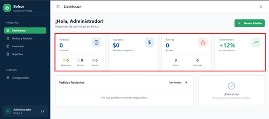
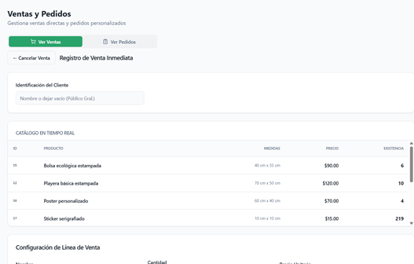
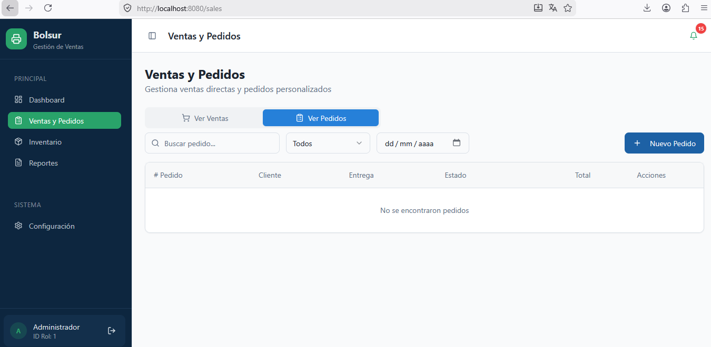
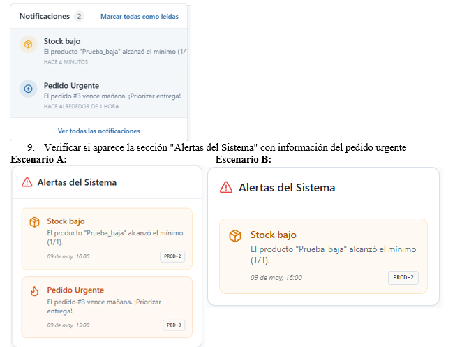
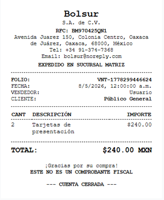

Detalles del portafolio
proyecto bolsur.





Descripción
La serigrafía bolsur es una tienda pequeña que se dedica a la venta de productos serigrafiados, e imprimir logos sobre ellos, personalizar productos, para venta al menudeo o por volumen. Donde a través de una aplicación de sistema de inventario se gestionará el registro y control de los productos.
prioridades del programa 1._ base de datos de los artículos, medidas 2._ que se pueda registrar pedidos y mostrarlos organizados por fecha de entrega 3._ que se puedas imprimir la factura 4._ que los datos que se generan se puedan enviar por correo electronico
Funcionalidad del producto El sistema punto de venta para la empresa permitirá gestionar de manera eficiente los procesos principales del negocio relacionados con ventas, pedidos, inventario y administración de usuarios.La aplicación estará diseñada para facilitar el registro, control y consulta de la información, reduciendo errores y optimizando tiempos de información
Erick Omar
El Dashboard es la pantalla principal del sistema Bolsur – Gestión de Ventas, donde el usuario puede visualizar un resumen general de la actividad del sistema. Su objetivo es proporcionar información rápida sobre pedidos, ingresos, alertas y crecimiento del negocio. Componentes de la interfaz 1. Barra lateral de navegación Permite acceder a las diferentes secciones del sistema. Contiene las siguientes opciones: ● Dashboard: muestra el resumen general del sistema. ● Ventas y pedidos: gestión y seguimiento de pedidos realizados. ● Inventario: control de productos disponibles y stock. ● Reportes: visualización de reportes y estadísticas. ● Configuración: ajustes del sistema. 2. Encabezado superior En esta sección se muestra: ● Notificaciones del sistema. ● Información del usuario activo (María González). ● Acceso rápido al perfil o cierre de sesión. 3. Botón “Nuevo Pedido” Ubicado en la parte superior derecha del dashboard. Permite registrar un nuevo pedido en el sistema. 4. Tarjetas de resumen Muestran indicadores importantes del sistema: ● Pedidos: cantidad total de pedidos del mes, con estados como pendientes, en proceso y terminados. ● Ingresos: monto total generado por pedidos entregados. ● Alertas: número de alertas activas, como pedidos urgentes o bajo stock. ● Crecimiento: porcentaje de crecimiento respecto al mes anterior. 5. Pedidos recientes Lista de los pedidos más recientes registrados en el sistema, mostrando: ● ID del pedido ● Cliente ● Estado del pedido ● Monto total ● Fecha de entrega 6. Panel de alertas Muestra notificaciones importantes del sistema, como pedidos vencidos o problemas de inventario, permitiendo al usuario actuar rápidamente
informacion del proyecto
- categoria Programa web
- Cliente *****
- fecha de realización 01 Junio, 2026